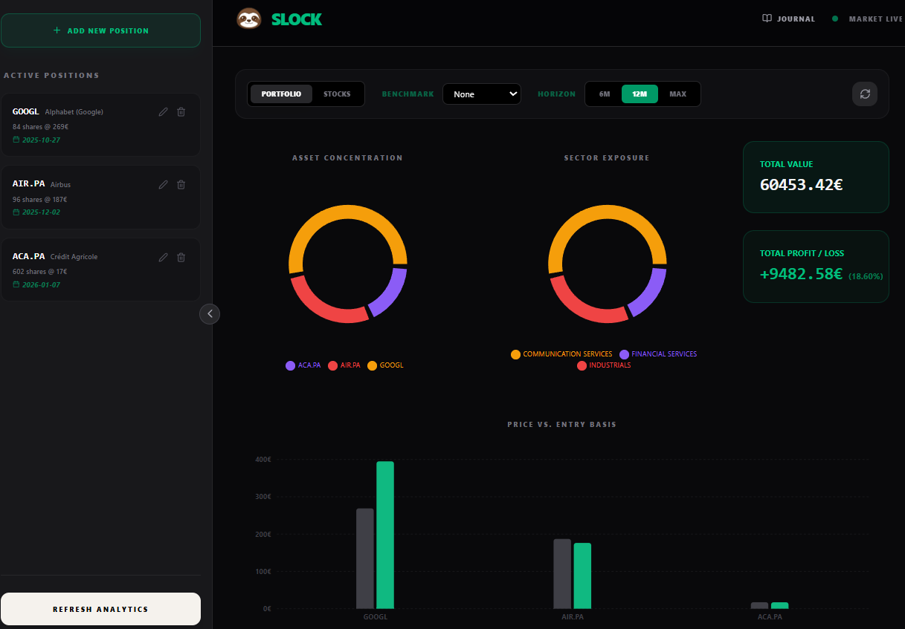
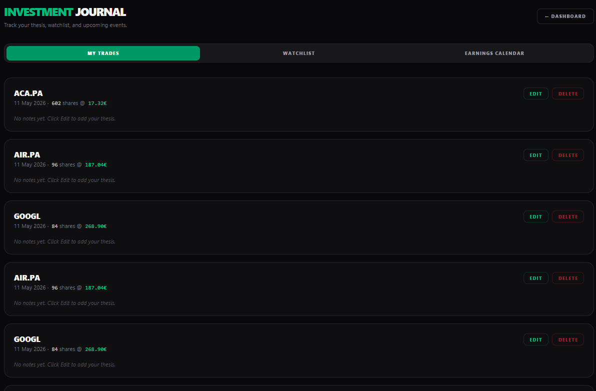

Slock — Quantitative Portfolio Analyzer
FastAPI, React (Vite), SQLite, Pandas
Local full-stack financial dashboard for tracking stock performance, calculating risk metrics (Alpha, Beta, Volatility, RSI), and visualizing unrealized P&L.
Code and deployment instructions: Slock App.

